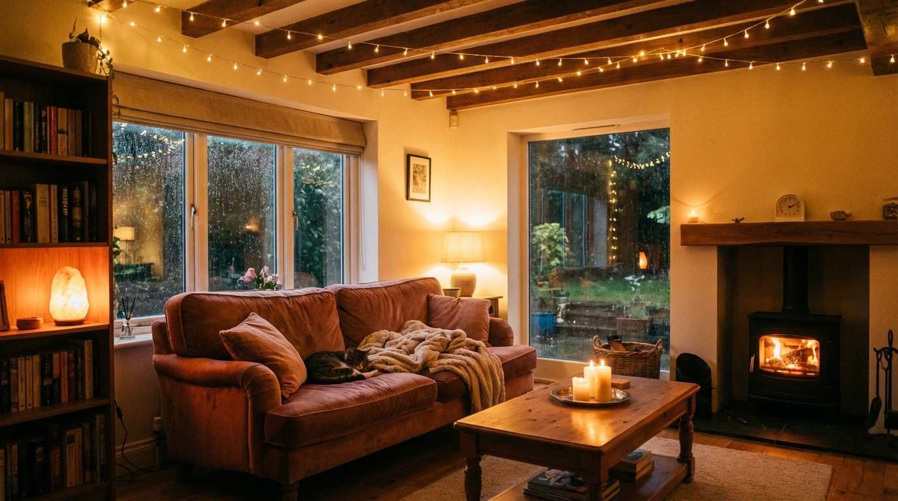
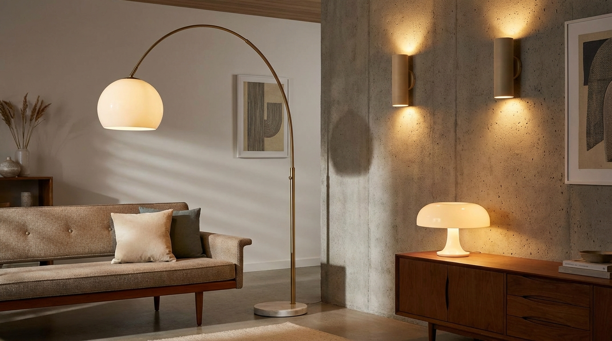

Introduction
Good lighting is less about brightness and more about balance. A single overhead fixture can make a room feel flat, while a mix of ambient, task, and accent light creates depth and atmosphere. The best lighting is flexible enough to match the time of day and the mood you want the room to have.
Simple changes like adding a lamp, softening a bulb, or shifting a fixture can create an instant upgrade. These ideas focus on practical, accessible changes that make spaces feel more comfortable without feeling overly styled.
Think of lighting as layers. Ambient light provides the base, task light supports daily routines, and accent light adds glow and depth. When these layers work together, a room feels intentional and relaxed.
Pay attention to how light moves through the room. Morning sun, afternoon shadows, and evening darkness all change the way a space feels. Simple adjustments, like shifting a lamp closer to a wall or using a softer bulb at night, can make the room feel calmer without adding new fixtures.
Simple Lighting Ideas
Choose a few ideas that fit how you actually use the room. Lighting works best when it supports your habits instead of fighting them.
1. Add a Warm Table Lamp
A single table lamp can soften a room instantly. Warm light at a lower height creates a cozy glow and reduces harsh shadows from overhead lighting.
- Place the lamp near seating to create a soft pool of light.
- Use a warm bulb to keep the tone gentle.
- Choose a shade that diffuses light rather than directing it.

Cozy ambient lighting.
2. Layer Light at Different Heights
Modern rooms feel more inviting when light is layered. A mix of overhead, mid-level, and low light makes the space feel balanced and dimensional.
- Combine a ceiling fixture with a floor lamp or table lamp.
- Add a small accent light near shelves or a console.
- Keep the tones consistent so the light feels unified.
3. Use a Floor Lamp to Define a Corner
A floor lamp can give a quiet corner purpose. It adds height and makes a reading chair or console feel intentional without extra decor.
- Place it beside a chair or sofa to create a reading zone.
- Choose a slim silhouette so it does not feel heavy.
- Angle the light toward the wall for a softer wash.
4. Soften Overhead Light With a Shade
Overhead lighting often feels stark. Adding a soft shade or diffusing cover can reduce glare and create a warmer, more even glow.
- Use a fabric or frosted shade to reduce harsh light.
- Keep the fixture finish simple so it feels modern.
- Pair overhead light with lamps for balance.
5. Highlight One Wall With Accent Light
Accent lighting adds depth by drawing attention to a wall or object. A small picture light or wall sconce can make art or texture feel more intentional.
- Use accent light on a single focal wall for clarity.
- Keep the light warm so it feels soft and inviting.
- Limit to one or two accent points per room.

Modern lamp accent.
6. Add Lighting Near Mirrors
Mirrors reflect light and make rooms feel brighter. A lamp near a mirror doubles the glow and adds a soft, flattering effect.
- Place a lamp next to or opposite a mirror.
- Use a warm bulb to avoid harsh reflections.
- Keep the base compact so it does not crowd the surface.
7. Use Dimmers to Control Mood
Dimmers let you shift the atmosphere from bright and functional to soft and relaxed. They also help unify multiple light sources in a single room.
- Dim overhead lights in the evening for a calm glow.
- Match lamp brightness so the room feels even.
- Keep dimmers at comfortable levels rather than full brightness.
8. Place Light Behind Sheer Curtains
Light filtered through fabric creates a soft, diffused glow. Sheer curtains or a light linen panel can make a lamp feel more ambient and relaxed.
- Use a lamp behind a curtain to soften the light spill.
- Choose light fabrics that allow warmth to pass through.
- Keep cords and bases tucked for a clean look.
9. Keep Bulb Color Consistent
Even a well-styled room can feel off if the bulb colors vary. Consistent warmth keeps the lighting cohesive and makes the room feel calmer.
- Use the same color temperature in a single room.
- Stick with warm tones for a cozy ambiance.
- Replace bulbs in pairs to keep the light matched.
How to Style Lighting in Any Room
Begin With a Soft Ambient Base
Start with ambient light that gently fills the room. This can be an overhead fixture, a central pendant, or a bright lamp. Once the base is set, add smaller lights to create depth.
- Use one main ambient source in each room.
- Keep the base light warm rather than cool.
- Add lamps to soften corners and reduce shadows.
Add Task Lighting Where You Need It
Task lighting keeps daily routines easy. A reading lamp, desk light, or kitchen counter light can improve function without making the room feel harsh.
- Place task lights near seating, desks, or counters.
- Keep task lights focused rather than overly bright.
- Choose simple, clean fixtures that blend with the room.
Finish With Accent Glow
Accent lighting is the final layer. It highlights art, texture, or architectural details and makes the room feel more considered.
One or two accent points are usually enough. When every surface glows, the room can lose depth. Keeping the accent glow minimal helps the eye rest and makes the overall atmosphere feel more intentional.
- Use accent light on one or two focal points.
- Keep the glow soft so it feels atmospheric.
- Let accent light complement, not overpower, the room.
Common Mistakes to Avoid
Lighting can elevate a room quickly, but small mistakes can make it feel harsh or uneven.
- Relying on one overhead light for the entire room.
- Mixing cool and warm bulbs in the same space.
- Choosing fixtures that are too large or too small.
- Placing lamps too low or too high for comfort.
- Overlighting every corner and losing contrast.
Conclusion
Lighting is one of the simplest ways to change how a room feels. With a few thoughtful layers and a warm palette, any space can feel more inviting and calm.
Start with one lamp, add a second layer, and refine as you go. When the lighting matches your routines, the room becomes more comfortable and naturally beautiful.
Small changes add up. Swapping a single bulb or moving one lamp can shift the mood of the entire room, making it feel softer and more welcoming without a full redesign.